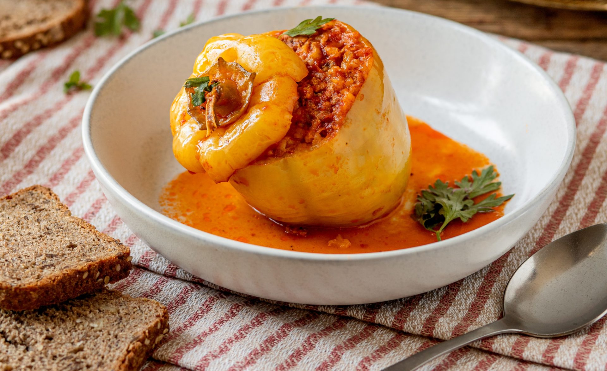

Potrebno je:
U činiji pomešati mleveno meso-svinjsko, juneće, ili ćureće sve jedno je, dodajte seckani luk, izrendanu kelerabu i 2 belanceta. Posolite i pobiberite i dodajte ukoliko volite malo karija u prahu.
Izdubite paprike i napunite smesom. Poređajte u dublju šerpu i prelijte sa vodom i kuvanim paradajzom. Kuvajte oko 60 minuta na laganoj vatri.